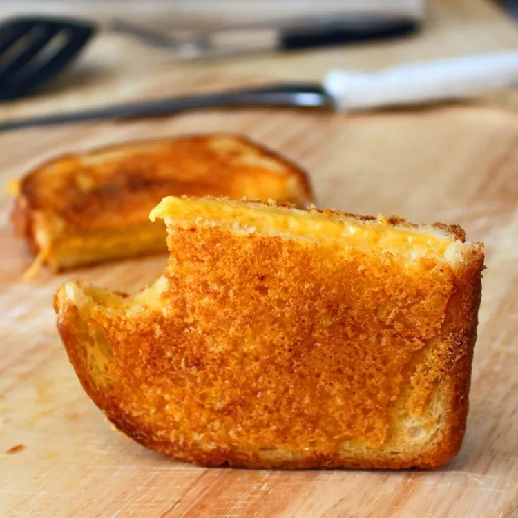

Inside-Out Grilled Cheese

Description
This inside-out grilled cheese is a crispy, crunchy, cheesy masterpiece. In my
humble opinion, it is the ultimate grilled cheese sandwhich. Make sure you
follow some basic rules for this to work properly. Only use airy,
nutritionally insignificant white bread. Be sure to use a nice sharp Cheddar
and a quality nonstick pan over medium to medium-low heat.
Ingredients
- 2 tablespoons butter, divided
- 2 slices white bread
- 1/2 cup shredded extra sharp Cheddar cheese, divided
Directions
-
Melt 1 1/2 tablespoons butter in a large nonstick skillet over medium-low
heat. Place bread slices over hot butter in the skillet.
-
Spread about 1/4 cup Cheddar cheese on 1 bread slice; place other bread
slice, butter side up, on top of cheese. Spread about 2 tablespoons cheese
on top of sandwich.
-
Melt remaining 1/2 tablespoon butter in the skillet next to sandwich. Flip
sandwich onto melted butter, cheese-side down. Spread remaining cheese on
top of sandwich. Cook until cheese on the bottom is crispy and caramelized,
3 to 4 minutes. Flip sandwich and cook until cheese is crispy and
caramelized on the other side, 3 to 4 minutes more.